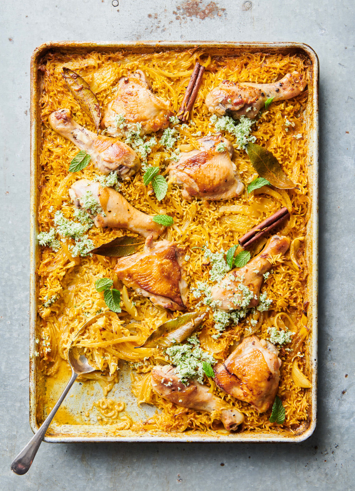

Home

The oven does all the work with this aromatic, spicy coconut
rice tray bake. The chicken cooks to a wonderful tenderness
and the rice is fluffy and totally delicious.
Ingredients
Spice Mix
- 1 tsp cumin seeds
- 1 tsp ground tumeric
- 1 tsp paprika
- 1 tsp garam masala
- 1/4 tsp ground cinnamon
- sea salt
Tray Bake
- 6 chicken thighs
- 1 brown onion, diced
- 1 tbsp minced garlic
- 1 tbsp crushed ginger
- 1 1/3 C basmati rice, rinsed
- 1 tin coconut milk (400ml)
- 400ml chicken stock
Method
- Preheat oven to 180C fan bake.
- Heat butter and oil in large lidded oven proof frying pan and brown
chicken all over. Transfer the chicken to a plate.
- Combine the spice mix ingredients in a small bowl.
- Add the onion, garlic, ginger and spice mix to the pan and cook for 2 minutes.
- Stir in the rice, coconut milk and stock.
- Add the chicken to the pot.
- Put the lid on and cook for 25 minutes, then remove lid and cook for a
further 15 minutes until the rice and chicken is fully cooked.
- Serve with green beans or a salad.